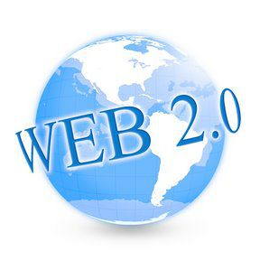

1960
Web 1.0
La forma más básica que existe, con navegadores de sólo texto, como ELISA, después surgió el HTML que hizo las páginas más agradables a la vista y a los primeros navegadores visuales como Netscape e Internet Explorer.

1991
Se crea la WWW
Tim Berners Lee, crea la Word Wide Web más conocida como WWW. Propuso un nuevo sistema de "hipertexto" para compartir documentos.

Web 1.0
La forma más básica que existe, con navegadores de sólo texto, como ELISA, después surgió el HTML que hizo las páginas más agradables a la vista y a los primeros navegadores visuales como Netscape e Internet Explorer.
1992
Permitió tráfico de información globalmente
Mediante el uso de buscadores y la distribución de hipertexto1 . Esto facilitó en gran medida el desplazamiento entre páginas web, lo que permitía que internet fuera más sencillo y accesible.
1993
Nuevos navegadores
- Erwise
- ViolaWWW
- NCSA Mosaic
- X-Windows
1990
Web 2.0
Se inventó por Berners Lee y Robert Cailliua. Estas dos últimas décadas han sufrido una fuerte evolución.
2004
Tom O' Reilly
SE entiende por Web 2.0 todos aquellos servicios de Internet cuya base de datos puede ser modificada en contenido, formato o ambos.Los usuarios tienen un control total de su información.Se produce una descentralización de Internet por la que el cliente es, a su vez, servidor.

2006
YouTube comprado por Google
En ese año YouTube fue adquirido oficialmente por Google.

2006
Web 3.0
El término Web 3.0 apareció por primera vez en 2006 en un artículo de Jeffrey Zeldman crítico de la Web 2.0 y asociado a tecnologías como AJAX.
2010
Web 3.0 Principios
Para crear una base de conocimiento e información semántica y cualitativa. Se pretenden con ello, almacenar las preferencias de los usuarios (gustos, costumbres, conectividad, interactividad, usabilidad, etc.) y al mismo tiempo, combinándolas con los contenidos existentes en redes sociales e internet móvil, entre otros
2016
Web 4.0
Personas conectándose con Personas y aplicaciones Web de forma ubicua, se añaden tecnologías como la Inteligencia Artificial, la Voz como vehículo de intercomunicación para formar una Web Total.
2011
EN LATINOAMÉRICA
114,5 millones de personas visitaron un sitio de redes sociales.

2018
Bots
Son programas de interacción que traerá la web 4.0. Por ahora dependen de la introducción de texto, pero, con la evolución en tecnologías de “hablar al texto” (Speech to text), seremos capaces de conversar con ellos de igual modo que lo haríamos con un amigo en una cafetería.

2021
Complementos
Smartwatches que miden el nivel de oxígeno en sangre Apple, Garmin o Fitbit